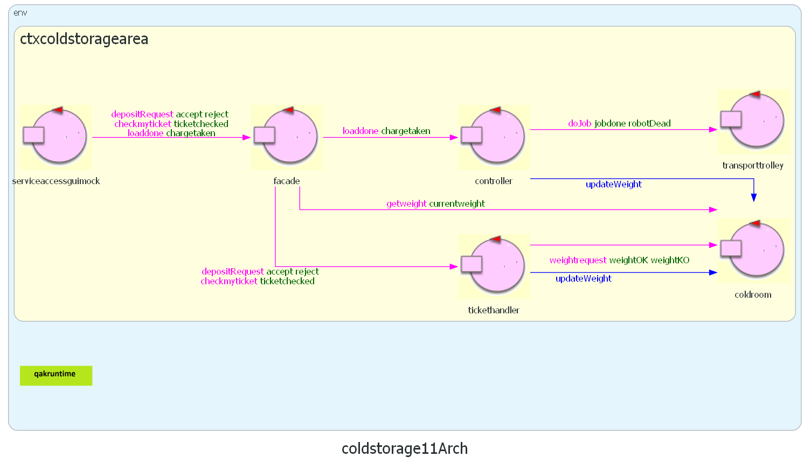
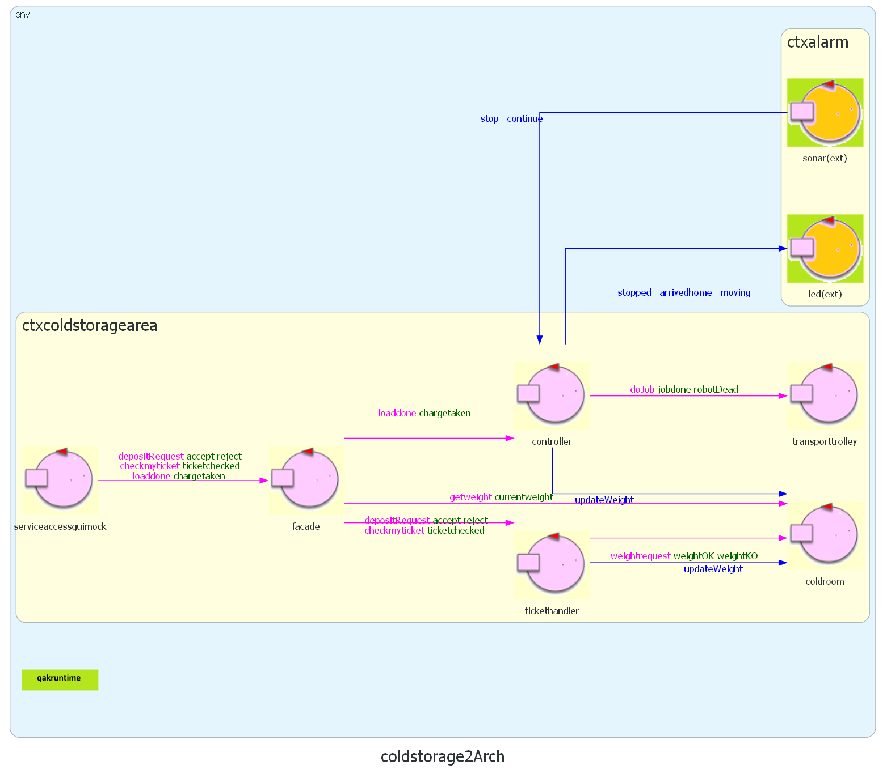

Sprint 2
Goal Sprint 2
Implementazione di Led e Sonar su RaspberryPi.
Nel secondo sprint verranno implementati il sistema di led e sonar con la logica ad essi associata. I due componenti si troveranno su un dispositivo esterno e dovranno interagire con il sistema remotamente.
Modello dello sprint precedente.

Requisiti

Alarm requirements
The system includes a Sonar and a Led connected to a RaspberryPi.
The Sonar is used as an ‘alarm device’: when it measures a distance less that a prefixed value DLIMT, the transport trolley must be stopped; it will be resumed when Sonar detects again a distance higher than DLIMT.
The Led is used as a warning devices, according to the following scheme:
- the Led is off when the transport trolley is at HOME
- the Led blinks while the transport trolley is moving
- the Led is on when transport trolley is stopped
Analisi dei Requisiti
Domande al Committente
Il committente fornisce software relativo al Led e al Sonar? NO
Il LED può/deve essere connesso allo stesso RaspberryPi del sonar? SI
Il valore DLIMIT deve essere cablato nel sistema o è bene sia definibile in modo configurabile dall’utente finale? Non deve cambiare
Analisi del Problema
Sistema distribuito - Come implementiamo la comunicazione?
Context ctxalarm ip [host="localhost" port=8300]
Context ctxcoldstoragearea ip [host="127.0.0.1" port=8040]
ExternalQActor controller context ctxcoldstoragearea
Rispetto al resto del sistema Sonar e Led si trovano da requisiti su un RaspberryPi esterno.
I due nodi di elaborazione devono potersi scambiare informazione via rete.
Incapsuliamo in due attori in componenti che si occuperanno di gestire Led e Sonar e sfruttiamo questi per scambiare i messaggi.
Messaggi
# messaggi per il led
Dispatch arrivedhome : arrivedhome(NO_PARAM)
Dispatch moving : moving(NO_PARAM)
Dispatch stopped : stopped(NO_PARAM)
# messaggi per il sonar
Dispatch stop : stop(NO_PARAM)
Dispatch continue : continue(NO_PARAM)
In entrambi i casi i messaggi sono destinati ad un attore specifico conosciuto.
Nel caso del sonar, anche trattandosi di uno stop d'emergenza non è stato usato Req/Resp poiché il raspberry non mi permette comunque di visualizzare facilmente una risposta (solo un led come output) inoltre da requisiti non è richiesto e la buona riuscita del comando può essere visualizzato nella ServiceStatusGUI.
Inoltre il sistema non è business/safety critical. Nel peggiore dei casi un utente potrebbe interagire una seconda volta con il sonar se la prima volta non avesse funzionato correttamente.
Business Logic
Led: La logica di accensione e spegnimento del led verrà gestita dall'attore associato in base allo stato comunicato dal controller. Il componente di basso livello deve solo essere in grado di accendere/spegnere il led.
Sonar: Sfruttiamo l'attore associato al sonar per elaborare i dati emessi dal sonar e decidere se lanciare al controller il messaggio di allarme.
- PRO: alleggerisco il carico di dati nella rete, semplifico il controller, principio di singola responsabilità.
- CONTRO: difficoltà maggiore nel caso di DLIMIT variabile, il file di config sarebbe diverso dal precedente e posto sul raspberry.
Problema del messaggio duplicato
Dobbiamo gestire il caso in cui arrivano più volte gli stessi messaggi (ottengo 2 stop di fila ad esempio perdendo il "continue" intermedio)
Architettura logica dopo l'analisi del problema

Test Plan
Stato del led che si aggiorna correttamente.
Controller che modifica correttamente lo stato dopo aver ricevuto un messaggio dal sonar.
Il testing di un sonar riguarda due aspetti distinti:
- il test sul corretto funzionamento del dispositivo in quanto tale. Supponendo di porre di fronte al Sonar un ostacolo a distanza D, il Sonar deve emettere dati di valore D +/- epsilon.
- il test sul corretto funzionamento del componente software responsabile della trasformazione del dispositivo in un produttore di dati consumabili da un altro componente.
Test implementato:
Supponendo di porre di fronte al Sonar un ostacolo a distanza D, il BasicRobot deve fermarsi e riparte solo dopo che l'ostacolo è rimosso: TestService
Progettazione
SonarActor e LedActor
Codice: alarm.qak
SonarService
Per interagire con lo script di basso livello relativo al sonar usiamo SonarService.kt che legge da inputStream i dati generati da sonar.py
Sonar Script
sonar in python: dopo l'avvio scrive la distanza calcolata su stdout 4 volte al secondo:
sonarRasp.py
Led Script
facciamo solo uno script che accende e uno script che spegne e ci pensa l'attore ad invocare lo script secondo bisogno per mostrare lo stato corrente, la logica di lampeggiamento è lasciata all'attore led da gestire e non allo script.
- ledOn in python: ledOnRasp.py
- ledOff in python: ledOffRasp.py
Controller
Aggiungiamo al controller la nuova logica: coldstorage.qak
QActor controller context ctxcoldstoragearea {
...
State stopped{
forward led -m stopped : stopped(1)
forward planexec -m stopplan : stopplan(1)
}Transition t0 whenMsg stop -> stopped
whenMsg continue -> continueworking
State continueworking{
forward led -m arrivedhome : arrivedhome(1)
forward planexec -m continueplan : continueplan(1)
}Goto work
...
State stoppedwhileworking {
forward planexec -m stopplan : stopplan(1)
forward led -m stopped : stopped(1)
}Transition t0 whenMsg continue -> waitingforreply
State waitingforreply{
forward planexec -m continueplan : continueplan(1)
forward led -m moving : moving(1)
}Transition endjob whenMsg stop -> stoppedwhileworking
whenReply robotDead -> handlerobotdead
whenReply jobdone -> jobdone
...
}
Deployment
Deployment on RaspberryPi 3B/3B+

Led
- braccino corto: pin fisico 39 (GND)
- braccino lungo: pin fisico 40 (GPIO21)
Sonar
- VCC : pin fisico 4 (+5v)
- GND : pin fisico 6 (GND)
- TRIG: pin fisico 11 (GPIO 17)
- ECHO: pin fisico 13 (GPIO 27)
- Genera eseguibile con il Plugin Distribution di gradle (create Zip)
- Deploy della cartella generata sul rasp con python script
- Avvia main alarm (projectDir/bin/projectName) (il .bat è per windows)
Main system deployment
- Avviare il container itunibovirtualrobot23 su docker
Viene lanciato l'ambiente virtuale con il robot all'indirizzo http://localhost:8090/ - In intellij avviare il file MainCtxbasicrobot.kt del progetto BasicRobot
- In intellij avviare il file MainCtxcoldstoragearea.kt del progetto ColdStorage
- In intellij avviare il file MainCtxalarm.kt del progetto Alarm
- In intellij avviare il file ServiceaccessguiApplication.java del progetto serviceaccessgui. Aprire il client all'indirizzo http://localhost:8085/
| Lisa Innocenti Uccini | Luca Lombardi | Giacomo Romanini |
|---|---|---|
 |
 |
 |
| github: LisaIU00 | github: Lombax99 | github: RedDuality |